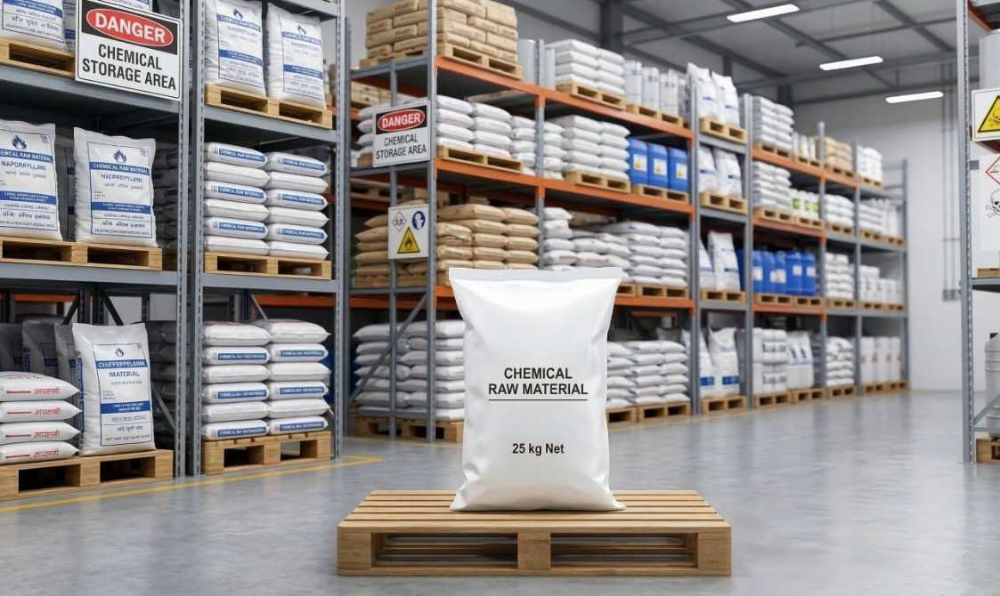

Chemical Industry Packaging Bags
Industrial polypropylene woven bags built to safely store and transport chemicals, minerals, powders and industrial compounds. Manufactured with chemical resistant virgin polypropylene and available with inner PE liner for added product protection.
Bag TypesPP Woven, Laminated, Jumbo
Available Sizes25 KG, 50 KG, Jumbo 500-1000 KG
Chemical ResistantYes
Inner LinerPE Liner Available
UV StabilizedAvailable on Request
SupplyPan India & Export